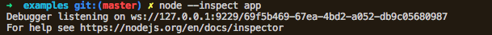
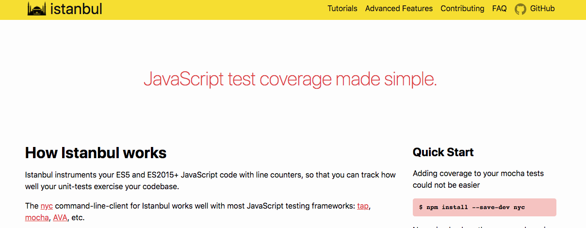

Debugging & Tests
By Nabil Naffar & Danny Vernovsky & Almog LaktiviSetting up debugger
--inspect &
--inspect-brk params allows to open TCP port to the debugger

tsconfig.json should be configured to create .ts.map files
setting up ide
testing

To test or not to test
Testing stack
- Testing framework
mocha, jasmine, jest, alsatian - Assertion library
chai, assert, expect, should - Testing support tools (coverage, mutations)
istanbul, striker
mocha testing framework
describe('test suite', () => {
before(() => {
// will happen once for suite
});
beforeEach(() => {
//will happen before every test
})
it('some test', () => {
expect(true).to.be.eq(true);
});
it('some pending test');
afterEach(() => {
// will happen once after suite
})
after(() => {
// will happen after evety test
});
});
assertion library
Chai is a BDD / TDD assertion library for node and the browser that can be delightfully paired with any javascript testing framework.
Coverage: Istanbul
